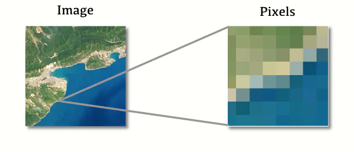
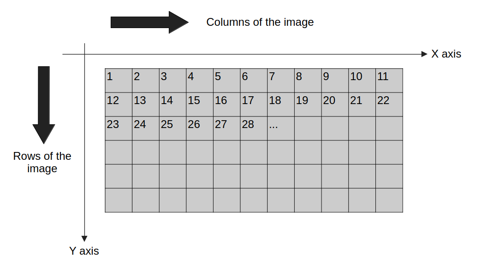

const matrix = [_]u8{
201, 10, 25, 185, 65, 70,
65, 120, 110, 65, 120, 117,
98, 95, 12, 213, 26, 88,
143, 112, 65, 97, 99, 205,
234, 105, 56, 43, 44, 216,
45, 59, 243, 211, 209, 54,
};15 Project 4 - Developing an image filter
In this chapter we are going to build a new project. The objective of this project is to write a program that applies a filter over an image. More specifically, a “grayscale filter”, which transforms any color image into a grayscale image.
We are going to use the image displayed in Figure 15.1 in this project. In other words, we want to transform this colored image into a grayscale image, by using our “image filter program” written in Zig.
We don’t need to write a lot of code to build such “image filter program”. However, we first need to understand how digital images work. That is why we begin this chapter by explaining the theory behind digital images and how colors are represented in modern computers. We also give a brief explanation about the PNG (Portable Network Graphics) file format, which is the format used in the example images.
At the end of this chapter, we should have a full example of a program that takes the PNG image displayed in Figure 15.1 as input, and writes a new image to the current working directory that is the grayscale version of this input image. This grayscale version of Figure 15.1 is exposed in Figure 15.2. You can find the full source code of this small project at the ZigExamples/image_filter folder at the official repository of this book1.
15.1 How we see things?
In this section, I want to briefly describe to you how we (humans) actually see things with our own eyes. I mean, how our eyes work? If you do have a very basic understanding of how our eyes work, you will understand more easily how digital images are made. Because the techniques behind digital images were developed by taking a lot of inspiration from how our human eyes work.
You can interpret a human eye as a light sensor, or, a light receptor. The eye receives some amount of light as input, and it interprets the colors that are present in this “amount of light”. If no amount of light hits the eye, then, the eye cannot extract color from it, and as result, we end up seeing nothing, or, more precisely, we see complete blackness.
Therefore, everything depends on light. What we actually see are the colors (blue, red, orange, green, purple, yellow, etc.) that are being reflected from the light that is hitting our eyes. Light is the source of all colors! This is what Isaac Newton discovered on his famous prism experiment2 in the 1660s.
Inside our eyes, we have a specific type of cell called the “cone cell”. Our eye have three different types, or, three different versions of these “cone cells”. Each type of cone cell is very sensitive to a specific spectrum of the light. More specifically, to the spectrums that define the colors red, green and blue. So, in summary, our eyes have specific types of cells that are highly sensitive to these three colors (red, green and blue).
These are the cells responsible for perceiving the color present in the light that hits our eyes. As a result, our eyes perceives color as a mixture of these three colors (red, green and blue). By having an amount of each one of these three colors, and mixing them together, we can get any other visible color that we want. So every color that we see is perceived as a specific mixture of blues, greens and reds, like 30% of red, plus 20% of green, plus 50% of blue.
When these cone cells perceive (or, detect) the colors that are found in the light that is hitting our eyes, these cells produce electrical signals, which are sent to the brain. Our brain interprets these electrical signals, and use them to form the image that we are seeing inside our head.
Based on what we have discussed here, the bullet points exposed below describes the sequence of events that composes this very simplified version of how our human eyes work:
- Light hits our eyes.
- The cone cells perceive the colors that are present in this light.
- Cone cells produce electrical signals that describes the colors that were perceived in the light.
- The electrical signals are sent to the brain.
- Brain interprets these signals, and form the image based on the colors identified by these electrical signals.
15.2 How digital images work?
A digital image is a “digital representation” of an image that we see with our eyes. In other words, a digital image is a “digital representation” of the colors that we see and perceive through the light. In the digital world, we have two types of images, which are: vector images and raster images. Vector images are not described here. So just remember that the content discussed here is related solely to raster images, and not vector images.
A raster image is a type of digital image that is represented as a 2D (two dimensional) matrix of pixels. In other words, every raster image is basically a rectangle of pixels, and each pixel have a particular color. So, a raster image is just a rectangle of pixels, and each of these pixels are displayed in the screen of your computer (or the screen of any other device, e.g. laptop, tablet, smartphone, etc.) as a color.
Figure 15.3 demonstrates this idea. If you take any raster image, and you zoom into it very hard, you will see the actual pixels of the image. JPEG, TIFF and PNG are file formats that are commonly used to store raster images.

The more pixels the image has, the more information and detail we can include in the image. The more accurate, sharp and pretty the image will look. This is why photographic cameras usually produce big raster images, with several megapixels of resolution, to include as much detail as possible into the final image. As an example, a digital image with dimensions of 1920 pixels wide and 1080 pixels high, would be a image that contains \(1920 \times 1080 = 2073600\) pixels in total. You could also say that the “total area” of the image is of 2073600 pixels, although the concept of “area” is not really used here in computer graphics.
Most digital images we see in our modern world uses the RGB color model. RGB stands for (red, green and blue). So the color of each pixel in these raster images are usually represented as a mixture of red, green and blue, just like in our eyes. That is, the color of each pixel is identified by a set of three different integer values. Each integer value identifies the “amount” of each color (red, green and blue). For example, the set (199, 78, 70) identifies a color that is more close to red. We have 199 of red, 78 of green, and 70 of blue. In contrast, the set (129, 77, 250) describes a color that is more close to purple. Et cetera.
15.2.1 Images are displayed from top to bottom
This is not a rule written in stone, but the big majority of digital images are displayed from top to bottom and left to right. Most computers screens also follow this pattern. So, the first pixels in the image are the ones that are at the top and left corner of the image. You can find a visual representation of this logic in Figure 15.4.
Also notice in Figure 15.4 that, because a raster image is essentially a 2D matrix of pixels, the image is organized into rows and columns of pixels. The columns are defined by the horizontal x axis, while the rows are defined by the vertical y axis.
Each pixel (i.e., the gray rectangles) exposed in Figure 15.4 contains a number inside of it. These numbers are the indexes of the pixels. You can notice that the first pixels are in the top and left corner, and also, that the indexes of these pixels “grow to the sides”, or, in other words, they grow in the direction of the horizontal x axis. Most raster images are organized as rows of pixels. Thus, when these digital images are displayed, the screen display the first row of pixels, then, the second row, then, the third row, etc.

15.2.2 Representing the matrix of pixels in code
Ok, we know already that raster images are represented as 2D matrices of pixels. But we do not have a notion of a 2D matrix in Zig. Actually, most low-level languages in general (Zig, C, Rust, etc.) do not have such notion. So how can we represent such matrix of pixels in Zig, or any other low-level language? The strategy that most programmers choose in this situation is to just use a normal 1D array to store the values of this 2D matrix. In other words, you just create an normal 1D array, and store all values from both dimensions into this 1D array.
As an example, suppose we have a very small image of dimensions 4x3. Since a raster image is represented as a 2D matrix of pixels, and each pixel is represented by 3 “unsigned 8-bit” integer values, we have 12 pixels in total in this image, which are represented by \(3 \times 12 = 36\) integer values. Therefore, we need to create an array of 36 u8 values to store this small image.
The reason why unsigned 8-bit integer (u8) values are used to represent the amounts of each color, instead of any other integer type, is because they take the minimum amount of space as possible, or, the minimum amount of bits as possible. Which helps to reduces the binary size of the image, i.e., the 2D matrix. Also, they convey a good amount of precision and detail about the colors, even though they can represent a relatively small range (from 0 to 255) of “color amounts”.
Coming back to our initial example of a 4x3 image, the matrix object exposed below could be an example of an 1D array that stores the data that represents this 4x3 image.
The first three integer values in this array are the color amounts of the first pixel in the image. The next three integers are the colors amounts for the second pixel. And the sequence goes on in this pattern. Having that in mind, the size of the array that stores a raster image is usually a multiple of 3. In this case, the array have a size of 36.
I mean, the size of the array is usually a multiple of 3, because in specific circumstances, it can also be a multiple of 4. This happens when a transparency amount is also included into the raster image. In other words, there are some types of raster images that uses a different color model, which is the RGBA (red, green, blue and alpha) color model. The “alpha” corresponds to an amount of transparency in the pixel. So every pixel in a RGBA image is represented by a red, green, blue and alpha values.
Most raster images uses the standard RGB model, so, for the most part, you will see arrays sizes that are multiples of 3. But some images, especially the ones that are stored in PNG files, might be using the RGBA model, and, therefore, are represented by an array whose size is a multiple of 4.
In our case here, the example image of our project (Figure 15.1) is a raster image stored in a PNG file, and this specific image is using the RGBA color model. Therefore, each pixel in the image is represented by 4 different integer values, and, as consequence, to store this image in our Zig code, we need to create an array whose size is a multiple of 4.
15.3 The PNG library that we are going to use
Let’s begin our project by focusing on writing the necessary Zig code to read the data from the PNG file. In other words, we want to read the PNG file exposed in Figure 15.1, and parse its data to extract the 2D matrix of pixels that represents the image.
As we have discussed in Section 15.2.2, the image that we are using as example here is a PNG file that uses the RGBA color model, and, therefore, each pixel of the image is represented by 4 integer values. You can download this image by visiting the ZigExamples/image_filter folder at the official repository of this book3. You can also find in this folder the complete source code of this small project that we are developing here.
There are some C libraries available that we can use to read and parse PNG files. The most famous and used of all is libpng, which is the “official library” for reading and writing PNG files. Although this library is available on most operating system, it is well known for being complex and hard to use.
That is why, I’m going to use a more modern/easier alternative here in this project, which is the libspng library. I choose to use this C library here, because it’s much, much simpler to use than libpng, and it also offers very good performance for all operations. You can checkout the official website of the library4 to know more about it. You will also find there some documentation that might help you to understand and follow the code examples exposed here.
First of all, remember to build and install this libspng into your system. Because if you don’t do this step, the zig compiler will not be able to find the files and resources of this library in your computer, and link them with the Zig source code that we are writing together here. There is good information about how to build and install the library at the build section of the library documentation5.
15.4 The build script for this project
Okay, before I even start to write the code for the project, I will start first from the build script. Because the build script creates the environment that we need to build our project, specially with the C libraries that we want to use.
In this project, we are going to use functions from three C libraries essentially:
- libc, specifically the
stdio.hheader. - libm, or the C math library.
- libspng, the PNG library that I’ve described in the previous section.
I could create a single C header file that includes all the C header files that we need from these libraries, and then, translate this single C header file into Zig code. However, to better organize the code, and make it clear from which specific library each function comes from, I will create three different C header files in my project, one for each library. Here are the contents of these header files:
// Contents of src/c.h
#define _NO_CRT_STDIO_INLINE 1
#include <stdio.h>
// Contents of src/cmath.h
#include "math.h"
// Contents of src/png.h
#include "spng.h"As we’ve explained in Chapter 14, we need now to translate these C header files into Zig code, using the Translate-C package. About that, don’t forget to fetch/add this Translate-C package in your side through the Zig package manager with a zig fetch command.
I will translate each header file using these names specifically:
cfor thesrc/c.hheader file.cmathfor thesrc/cmath.hheader file.pngfor thesrc/png.hheader file.
This means that, the symbols from the src/c.h header file will be available in my Zig code through the c module. While the symbols from the src/png.h header, will be available through the png module, and so on. So, the C FILE pointer for example, will be referenced in my Zig code as c.FILE, etc.
The entire build script is exposed below. You can see that after thanslating these three separate C header files, I add them to the list of imported modules of the main module (src/image_filter.zig) of the project, through the root_module.imports attribute to make them available to the main module.
const std = @import("std");
const builtin = @import("builtin");
const Translator = @import("translate_c").Translator;
const LazyPath = std.Build.LazyPath;
pub fn build(b: *std.Build) !void {
const target = b.standardTargetOptions(.{});
const optimize = b.standardOptimizeOption(.{});
const translate_c = b.dependency("translate_c", .{});
const ch: Translator = .init(translate_c, .{
.c_source_file = b.path("src/c.h"),
.target = target,
.optimize = optimize,
.link_libc = true,
});
const cmath: Translator = .init(translate_c, .{
.c_source_file = b.path("src/cmath.h"),
.target = target,
.optimize = optimize,
.link_libc = true,
.link_system_libs = &.{.{.name = "m" }},
});
const png: Translator = .init(translate_c, .{
.c_source_file = b.path("src/png.h"),
.target = target,
.optimize = optimize,
.link_libc = true,
.link_system_libs = &.{
.{ .name = "zlib" },
.{ .name = "spng" },
},
});
const exe = b.addExecutable(.{
.name = "image_filter",
.root_module = b.createModule(.{
.root_source_file = b.path("src/image_filter.zig"),
.target = target,
.link_libc = true,
.imports = &.{
.{.name = "c", .module = ch.mod},
.{.name = "cmath", .module = cmath.mod},
.{.name = "png", .module = png.mod},
},
}),
});
b.installArtifact(exe);
}15.5 Storing the image data
Ok, now that we have the build script ready, let’s start writing the code of the project. Let’s begin discussing how we are going to store the image data inside our code once we read/load the image data into our process.
There are different strategies that we can take, but here are some considerations:
- images can be quite big in size, and their data is usually compressed inside the file.
- as we discussed in Section 15.2.2, we are going to store the image data in a 1D array of
u8values. - because the data will be stored in a 1D array, we also need to store some metadata (specially about the dimensions of the image), so that we can interpret this 1D array correctly, connecting each value to it’s 2D representation.
With these considerations in mind, is probably a good idea to create a struct to store these pieces of information together. Is also a good idea to store at least the raw image data (i.e. the 1D array), which is the bulk of the data, in the heap instead of the stack.
If you remember our discussion from Section 3.2 you will understand why. Because the stack is a memory space that is limited/small. So, the heap is usually a better place to store objects that might store big amounts of data. If we try to store them in the stack, we might get a stack overflow problem in our program.
Having all of these points in consideration, here is a struct named ImageData that could store the data that we need:
const ImageData = struct {
data: []u8,
decoded_size: u64,
header: ImageHeader,
pub fn deinit(self: ImageData, allocator: std.mem.Allocator) void {
allocator.free(self.data);
}
};15.6 Reading the PNG file
In order to extract the pixel data from the PNG file, we need to read and decode the file. A PNG file is just a binary file written in the “PNG format”. Luckily, the libspng library offers a function called spng_decode_image() that does all this heavy work for us.
Now, since libspng is a C library, most of the file and I/O operations in this library are made by using a FILE C pointer. Because of that, is probably a better idea to use the fopen() C function to open our PNG file, instead of using the openFile() method that I introduced in Chapter 13. That is why I’m importing the stdio.h C header in this project, and using the fopen() C function to open the file.
Every operation in libspng is made through a “context object”, which is a object of type *spng_ctx (created by the function spng_ctx_new()). I will always reference this object throughout this project with the name ctx. So everytime that you see the name ctx in the code, you know that it is a pointer to a spng_ctx object.
Also, to perform an operation over a PNG file, we need to specify which exact PNG file we are referring to. This is the job of spng_set_png_file(). We are using this function to specify the file descriptor object from which we want to read/write PNG data.
To store all the logic responsible for reading the PNG file, and decoding it’s data, I’m creating a new struct called PngReader. You can see below that this struct will store the libspng context object, and also the writer objects for the stdout and stderr streams, which we are going to use to report and print messages to the user of what the struct is currently doing.
Also notice in this struct that, the member that represents the “context object” (ctx) of libspng is marked as a pointer, instead of the actual object, so it’s “a pointer to the context object” (*spng_ctx). This follows the recommendations that we have discussed in Section 14.5.
Also notice the deinit() method, which uses the spng_ctx_free() function to free the memory allocated for the libspng context object.
const png = @import("png");
const PngReader = struct {
allocator: std.mem.Allocator,
stdout: *std.Io.Writer,
stderr: *std.Io.Writer,
ctx: *png.spng_ctx,
fn init(
allocator: std.mem.Allocator,
stdout_writer: *std.Io.Writer,
stderr_writer: *std.Io.Writer
) PngReader {
return PngReader{
.allocator = allocator,
.stdout = stdout_writer,
.stderr = stderr_writer,
.ctx = png.spng_ctx_new(0) orelse unreachable,
};
}
fn deinit(self: *PngReader) void {
defer png.spng_ctx_free(self.ctx);
}
};Now that we have discussed the main instance methods of the PngReader struct, let’s discuss the other methods. Specially the read_png() method, which is the main function of this struct, responsible for actually reading and decoding the data from the PNG file.
Notice in this function that:
- we are calling the
fopen_file()function (wrapper around thefopen()C function) to open the PNG file. - we set the PNG file to be used by the
libspngcontext object withspng_set_png_file(). - we read the image header section of the PNG file with
PngReader._get_image_header(). - print the metadata of the image with
PngReader._print_image_properties(). - we calculate the size of the decoded image data with
PngReader._calc_output_size(). - then, we allocate a buffer big enough to store the decoded image data.
- we make sure to initialize the memory of the buffer, with
@memset(). - we read and decode the data from the PNG file and store it into the buffer, with
PngReader._read_data_to_buffer(). - then, we close the PNG file with
fclose_file()(we don’t need to keep it open anymore). - then, we return an
ImageDataobject that contains the decoded image data, and all of the metadata around it.
Notice that we are passing the writer objects for stdout and stderr streams to most of these methods and functions. This allow them to print messages and report to us their progress, and, if any are facing any errors during their tasks.
fn read_png(self: *PngReader, path: []const u8) !ImageData {
const file_descriptor = try fopen_file(
path,
"rb",
self.stdout,
self.stderr
);
_ = png.spng_set_png_file(self.ctx, @ptrCast(file_descriptor));
const image_header = try self._get_image_header();
try self._print_image_properties(image_header);
const output_size = try self._calc_output_size();
var buffer = try self.allocator.alloc(u8, output_size);
@memset(buffer[0..], 0);
try self._read_data_to_buffer(buffer[0..]);
try fclose_file(
file_descriptor,
self.stdout,
self.stderr
);
return ImageData{
.data = buffer[0..],
.decoded_size = output_size,
.header = image_header,
};
}Now that we understand the basic pipeline, or, the basic sequence of steps to read our PNG file, let’s open each one of these methods and functions, and discuss them in more details over the next sections.
15.6.1 The wrappers around fopen() and fclose()
We want to write wrappers around the C functions fopen() and fclose(). Specially to check if these functions were able to open and close the file successfully. Because if they didn’t, then, it’s a good idea to return an error value to our process, and also report this status to the user. This is what the fopen_file() function exposed below does. The wrapper around fclose() (i.e. fclose_file()) is very similar to this one. You can find it in the source code of the project.
const c = @import("c");
fn fopen_file(
path: []const u8,
mode: []const u8,
stdout: *std.Io.Writer,
stderr: *std.Io.Writer
) !*c.FILE {
const file_descriptor = c.fopen(path.ptr, mode.ptr);
if (file_descriptor == null) {
try stderr.print("Could not open file: {s}\n", .{path});
try stderr.flush();
return error.CouldNotOpenFile;
}
try stdout.print("File at path {s} opened successfully\n", .{path});
try stdout.flush();
return file_descriptor;
}15.6.2 Reading the image header section
Now, the context object ctx is aware of our PNG file pedro_pascal.png, because it has access to a file descriptor object to this file. The first thing that we are going to do is to read the “image header section” of the PNG file. This “image header section” is the section of the file that contains some metadata about the PNG file, like, the bit depth of the pixel data of the image, the color model used in the file, the dimensions of the image (height and width in number of pixels), etc.
To make things easier, I will encapsulate this “read image header” operation into a nice and small method called _get_image_header(). All that this method needs to do is to call the spng_get_ihdr() function. This function from libspng is responsible for reading the image header data, and storing it into a C struct named spng_ihdr. Thus, an object of type spng_ihdr is a C struct that contains the data from the image header section of the PNG file.
Now, although I could return and use this spng_ihdr C object from this _get_image_header() method, this would involve allocating some space in the heap to store this spng_ihdr object. Since I understand that there is no need for that, specially for a small object like this one, I will create a Zig struct (named ImageHeader) just to store the essential parts/data that I want to use from this spng_ihdr C object. Because then, I can create and store this Zig struct in the stack, and let the function’s lifetime handle the memory behind this object.
const ImageHeader = struct {
width: u32,
height: u32,
bit_depth: u8,
color_type: u8,
compression_method: u8,
filter_method: u8,
interlace_method: u8,
};Also notice in this function, that I’m checking if the spng_get_ihdr() function call have returned or not an integer value that is different than zero. Most functions from the libspng library return a code status as result, and the code status “zero” means “success”. So any code status that is different than zero means that an error occurred while running spng_get_ihdr(). This is why I’m returning an error value (error.CouldNotGetImageHeader) from the function in case the code status returned by the function is different than zero.
fn _get_image_header(self: *PngReader) !ImageHeader {
_ = try self.stdout.write("Trying to get the header of the PNG file...\n");
try self.stdout.flush();
var image_header: png.spng_ihdr = undefined;
if (png.spng_get_ihdr(self.ctx, &image_header) != 0) {
return error.CouldNotGetImageHeader;
}
_ = try self.stdout.write("Header of PNG file retrieved succesfully\n");
try self.stdout.flush();
return ImageHeader{
.width = image_header.width,
.height = image_header.height,
.bit_depth = image_header.bit_depth,
.color_type = image_header.color_type,
.compression_method = image_header.compression_method,
.filter_method = image_header.filter_method,
.interlace_method = image_header.interlace_method,
};
}15.6.3 Printing the metadata of the image
After we got the image header data, it might be useful to print this metadata to the user. This is what the _print_image_properties() method does. It uses the writer object for stdout that we have stored inside our PngReader struct, to print the metadata of the image.
This is a nice way to have an idea of the size of the image (and it’s bit depth) that we are currently reading and decoding.
fn _print_image_properties(self: *PngReader, image_header: ImageHeader) !void {
_ = try self.stdout.write("Image metadata:\n");
try self.stdout.print(
" * Width: {d}\n * Height: {d}\n * Bit depth: {d}\n",
.{ image_header.width, image_header.height, image_header.bit_depth }
);
try self.stdout.flush();
}15.6.4 Allocating space for the pixel data
Before we read the pixel data from the PNG file, we need to allocate enough space to hold this data. But in order to allocate such space, we first need to know how much space we need to allocate. The dimensions of the image are obviously needed to calculate the size of this space. But there are other elements that also affect this number, such as the color model used in the image, the bit depth, and others.
Anyway, all of this means that calculating the size of the space that we need, is not a simple task. That is why the libspng library offers an utility function named spng_decoded_image_size() to calculate this size for us. Once again, I’m going to encapsulate the logic around this C function into a nice and small method named _calc_output_size(). You can see below that this function returns a nice integer value as result, informing the size of the space that we need to allocate.
fn _calc_output_size(self: *PngReader) !u64 {
var output_size: u64 = 0;
const status = png.spng_decoded_image_size(
self.ctx, png.SPNG_FMT_RGBA8, &output_size
);
if (status != 0) {
return error.CouldNotCalcOutputSize;
}
try self.stdout.print("Size of decoded PNG file in bytes: {d}\n", .{output_size});
try self.stdout.flush();
return output_size;
}You might quest yourself what the value SPNG_FMT_RGBA8 means. This value is actually an enum value defined in the spng.h C header file. This enum is used to identify a “PNG format”. More precisely, it identifies a PNG file that uses the RGBA color model and 8 bit depth. So, by providing this enum value as input to the spng_decoded_image_size() function, we are saying to this function to calculate the size of the decoded pixel data, by considering a PNG file that follows this “RGBA color model with 8 bit depth” format.
With this function, we can calculate the size of the decoded image data, and then, in conjunction with the allocator object that we’ve stored inside our PngReader struct, we can allocate a buffer (i.e. an array of bytes - u8 values) that is big enough to store the decoded pixel data of the image. Notice that I’m using @memset() to initialize the entire memory of this buffer to zero. This help us to avoid undefined behaviour in our program.
const output_size = try calc_output_size(ctx);
var buffer = try allocator.alloc(u8, output_size);
@memset(buffer[0..], 0);15.6.5 Decoding the image data
Now that we have the necessary space to store the decoded pixel data of the image, we can start to actually decode and extract this pixel data from the image, by using the spng_decode_image() C function.
The _read_data_to_buffer() method exposed below summarises the necessary steps to read this decoded pixel data, and store it into an input buffer. Notice that this function is encapsulating the logic around the spng_decode_image() function. Also, we are using the SPNG_FMT_RGBA8 enum value once again to inform the corresponding function that the PNG image being decoded uses the RGBA color model and 8 bit depth.
fn _read_data_to_buffer(self: *PngReader, buffer: []u8) !void {
_ = try self.stdout.write("Decoding PNG file ...\n");
try self.stdout.flush();
const status = png.spng_decode_image(
self.ctx,
buffer.ptr,
buffer.len,
png.SPNG_FMT_RGBA8,
0
);
if (status != 0) {
return error.CouldNotDecodeImage;
}
_ = try self.stdout.write("PNG file read and decoded successfully\n");
try self.stdout.flush();
}15.6.6 Looking at the pixel data
Now that we have the pixel data stored in our “buffer object”, we can take a quick look at the bytes. In the example below, we are looking at the first 12 bytes in the decoded pixel data.
If you take a close look at these values, you might notice that every 4 bytes in the sequence is 255. Which, coincidentally is the maximum possible integer value to be represented by a u8 value. So, if the range from 0 to 255, which is the range of integer values that can be represented by an u8 value, can be represented as a scale from 0% to 100%, these 255 values are essentially 100% in that scale.
If you recall from Section 15.2.2, I have described in that section that our pedro_pascal.png PNG file uses the RGBA color model, which adds an alpha (or transparency) byte to each pixel in the image. As consequence, each pixel in the image is represented by 4 bytes. Since we are looking here are the first 12 bytes in the image, it means that we are looking at the data from the first \(12 / 4 = 3\) pixels in the image.
So, based on how these first 12 bytes (or these 3 pixels) look, with these 255 values at every 4 bytes, we can say that is likely that every pixel in the image have alpha (or transparency) setted to 100%. This might not be true, but, is the most likely possibility. Also, if we look at the image itself, which if your recall is exposed in Figure 15.1, we can see that the transparency does not change across the image, which enforces this theory.
try stdout.print("{any}\n", .{buffer[0..12]});
try stdout.flush();{
200, 194, 216, 255, 203, 197,
219, 255, 206, 200, 223, 255
}We can see in the above result that the first pixel in this image have 200 of red, 194 of green, and 216 of blue. How do I know the order in which the colors appears in the sequence? If you have not guessed that yet, is because of the acronym RGB. First RED, then GREEN, then BLUE. If we scale these integer values according to our scale of 0% to 100% (0 to 255), we get 78% of red, 76% of green and 85% of blue.
15.7 Applying the image filter
Now that we have the data of each pixel in the image, we can focus on applying our image filter over these pixels. Remember, our objective here is to apply a grayscale filter over the image. A grayscale filter is a filter that transforms a colored image into a grayscale image.
There are different formulas and strategies to transform a colored image into a grayscale image. But all of these different strategies normally involve applying some math over the colors of each pixel. In this project, we are going to use the most general formula, which is exposed below. This formula considers \(r\) as the red of the pixel, \(g\) as the green, \(b\) as the blue, and \(p'\) as the linear luminance of the pixel.
\[ p' = (0.2126 \times r) + (0.7152 \times g) + (0.0722 \times b) \tag{15.1}\]
This Equation 15.1 is the formula to calculate the linear luminance of a pixel. It’s worth noting that this formula works only for images whose pixels are using the sRGB color space, which is the standard color space for the web. Thus, ideally, all images on the web should use this color space. Luckily, this is our case here, i.e., the pedro_pascal.png image is using this sRGB color space, and, as consequence, we can use the Equation 15.1. You can read more about this formula at the Wikipedia page for grayscale (Wikipedia 2024).
The apply_image_filter() function exposed below summarises the necessary steps to apply Equation 15.1 over the pixels in the image. We just apply this function over our buffer object that contains our pixel data, and, as result, the pixel data stored in this buffer object should now represent the grayscale version of our image.
fn apply_image_filter(image_data: *ImageData) !void {
const len = image_data.data.len;
const red_factor: f16 = 0.2126;
const green_factor: f16 = 0.7152;
const blue_factor: f16 = 0.0722;
var index: u64 = 0;
while (index < len) : (index += 4) {
const rf: f16 = @floatFromInt(image_data.data[index]);
const gf: f16 = @floatFromInt(image_data.data[index + 1]);
const bf: f16 = @floatFromInt(image_data.data[index + 2]);
const y_linear: f16 = (
(rf * red_factor) + (gf * green_factor) + (bf * blue_factor)
);
image_data.data[index] = @intFromFloat(y_linear);
image_data.data[index + 1] = @intFromFloat(y_linear);
image_data.data[index + 2] = @intFromFloat(y_linear);
}
}15.8 Saving the grayscale version of the image
Since we have now the grayscale version of our image stored in our buffer object, we need to encode this buffer object back into the “PNG format”, and save the encoded data into a new PNG file in our filesystem, so that we can access and see the grayscale version of our image that was produced by our small program.
To do that, the libspng library help us once again by offering an “encode data to PNG” type of function, which is the spng_encode_image() function. But in order to “encode data to PNG” with libspng, we need to create a new context object. This new context object must use an “encoder context”, which is identified by the enum value SPNG_CTX_ENCODER.
To store all the logic related to “reading the PNG file”, I have created the PngReader struct. Well, to store all the logic related to “encoding and writing the data into a new PNG file”, I will create a new struct named PngWriter, which is exposed below. Notice that this struct is very similar to the PngReader struct. But it uses an “encoder context” when calling the spng_ctx_new() function.
We are also creating a blank image header object (image_header) inside this struct. We will fill this image header object later with the metadata that we have collected from our image. Every PNG file needs to have an image header section. So building one is a pre-requisite to save our grayscale image into a new PNG file.
const PngWriter = struct {
allocator: std.mem.Allocator,
stdout: *std.Io.Writer,
stderr: *std.Io.Writer,
ctx: *png.spng_ctx,
image_header: *png.spng_ihdr,
fn init(
allocator: std.mem.Allocator,
stdout_writer: *std.Io.Writer,
stderr_writer: *std.Io.Writer
) PngWriter {
return PngWriter{
.allocator = allocator,
.stdout = stdout_writer,
.stderr = stderr_writer,
.ctx = png.spng_ctx_new(png.SPNG_CTX_ENCODER),
.image_header = undefined,
};
}
fn deinit(self: *PngWriter) void {
png.spng_ctx_free(self.ctx);
}
};15.8.1 The main method of the struct
To save our image, we essentially need to perform the following steps:
- open a new file in the filesystem, with the
fopen_file()function. - set this new file to be used by the
libspngcontext object withspng_set_png_file(). - build the image header section of the new PNG file with
PngWriter._build_image_header(). - set this image header section to be used by the
libspngcontext object withspng_set_ihdr(). - print the metadata of the image with
PngWriter._print_image_properties(). - encode the image data and write it into the new file with
PngWriter._encode_and_write_image(). - finally, we close the file that we’ve opened with
fclose_file().
The save_png() function exposed below, summarises all these steps to save the grayscale version of our image into a new PNG file in the filesystem. By default, this function will save the grayscale image into a file named pedro_pascal_filter.png in the CWD.
fn save_png(self: *PngWriter, image_data: *ImageData, path: []const u8) !void {
const file_descriptor = try fopen_file(
path,
"wb",
self.stdout,
self.stderr
);
_ = png.spng_set_png_file(self.ctx, @ptrCast(file_descriptor));
self._build_image_header(image_data);
_ = png.spng_set_ihdr(self.ctx, self.image_header);
try self._print_image_properties(image_data);
try self._encode_and_write_image(image_data);
try fclose_file(
file_descriptor,
self.stdout,
self.stderr
);
}After we execute this save_png() function, we should have a new PNG file inside our CWD, named pedro_pascal_filter.png. If we open this PNG file, we will see the same image exposed in Figure 15.2.
The “open file”, “close file” and “print image properties” are very similar to the ones that we have already discussed when we were reading the PNG file. So, I will not discuss them again here, for brevity reasons. Remember that you can always look at the complete source code of the project on GitHub6.
But, we have PngWriter._build_image_header() and PngWriter._encode_and_write_image() methods that we haven’t seem before. Let’s discuss them in the next sections.
15.8.2 Building the image header section
The image header is the object that describes the dimensions and characteristics of the image that we are writing. Without this object, libspng can’t properly encode our data into a PNG format. So, building an image header object is an essential step for us to save/write our grayscale version of our image.
The method _build_image_header() exposed below encapsulates the logic of building this object. Notice that we are copying the metadata from the ImageData object that we have created when we read the original PNG file.
fn _build_image_header(self: *PngWriter, image_data: *ImageData) void {
self.image_header.height = image_data.header.height;
self.image_header.width = image_data.header.width;
self.image_header.bit_depth = image_data.header.bit_depth;
self.image_header.color_type = image_data.header.color_type;
self.image_header.compression_method = image_data.header.compression_method;
self.image_header.filter_method = image_data.header.filter_method;
self.image_header.interlace_method = image_data.header.interlace_method;
}15.8.3 Encoding the image data and writing it into the new PNG file
Having the image header section built, we can now encode the pixel data stored in our buffer into the PNG format. To do that, libspng offers the spng_encode_image() function. I’ve encapsulated the logic around this function into a method named PngWriter._encode_and_write_image(), which is exposed below.
We need to provide as input our buffer with the image data to spng_encode_image(). However, since spng_encode_image() is a C function, we provide such buffer as C pointer. Because of that, I’m using the @ptrCast() Zig built-in function to cast our Zig buffer object into a C pointer that points to an array of u8 values ([*c]u8).
As we expect from a C function that works with an array, we also need to pass as input the length of this array to the function. This is why we are also passing the image_data.data.len value as input to the spng_encode_image() function. This is a very standard practice in C programming, since arrays in C don’t have their length’s embedded in their types, like they do in Zig.
After encoding the image data, we check the status code returned by the spng_encode_image() function. Just to make sure that the encoding process went smoothly. If the process was successful, we then print a success message to the user at the end.
fn _encode_and_write_image(self: *PngWriter, image_data: *ImageData) !void {
const encode_status = png.spng_encode_image(
self.ctx,
@as([*c]u8, @ptrCast(image_data.data)),
image_data.data.len,
png.SPNG_FMT_PNG,
png.SPNG_ENCODE_FINALIZE
);
if (encode_status != 0) {
const status: u32 = @intCast(encode_status);
try self.stderr.print("Test: {any}\n", .{encode_status == png.SPNG_EFMT});
try self.stderr.print("Error code: {d}\n", .{status});
try self.stderr.flush();
return error.CouldNotEncodeImage;
}
_ = try self.stdout.write("Image encoded and written successfully\n");
try self.stdout.flush();
}Remember, since we have setted the target PNG file with the spng_set_png_file() function, the spng_encode_image() function will not only encode our image data into the PNG format, but it also writes the encoded data into the file that we have setted, through the file descriptor object that we have provided to spng_set_png_file().